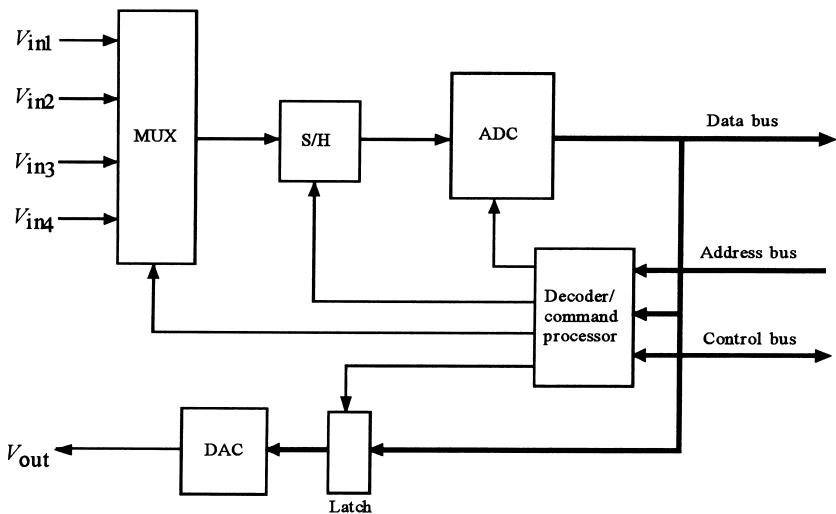
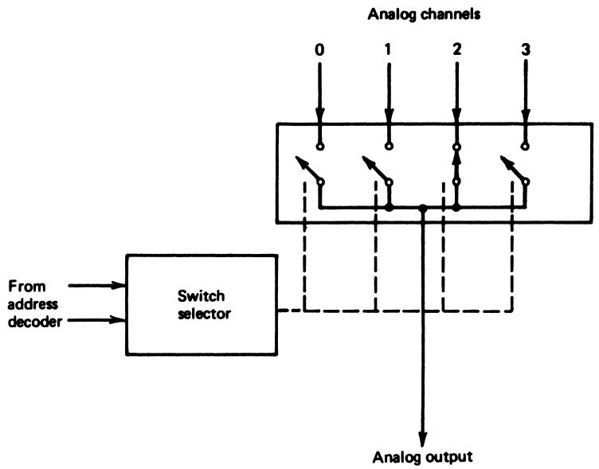
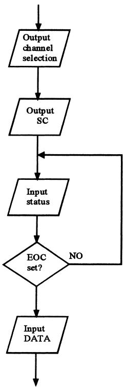
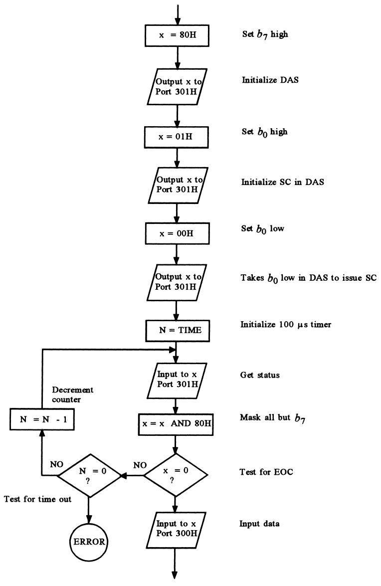
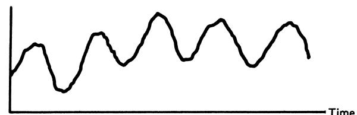
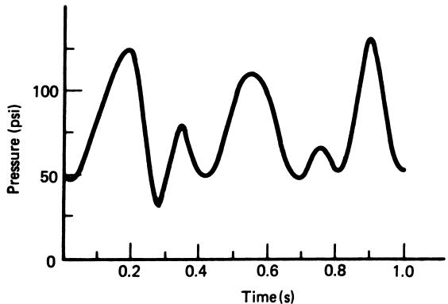
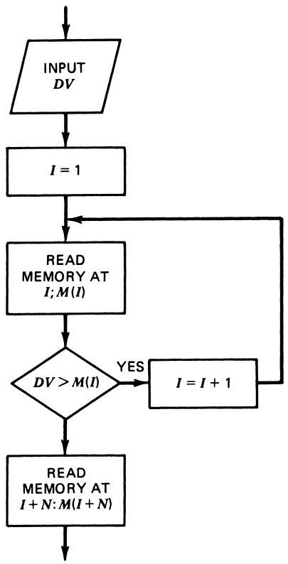

Data‑Acquisition Systems and Digital Data
Instruments 3.3
Imron Rosyadi
Learning Objectives
By the end of this session, you should be able to:
- Describe the hardware blocks on a PC data-acquisition board (DAS) and their roles.
- Explain how a PC communicates with a DAS through I/O ports and bus lines.
- Trace the software flow to acquire a sample, including EOC polling and time-out handling.
- Compute ADC resolution and relate digital codes to physical values (and vice versa).
- Determine appropriate sampling rates and interpret aliasing and under‑sampling.
- Explain and apply linearization techniques (equation‑based and table look‑up) for sensors.
Big Picture: From Plant to PC
Control Loop Context
- Physical process (plant): temperature, pressure, flow, etc.
- Transducers + conditioning: produce an analog voltage or current.
- DAS (Data-Acquisition System):
- Converts analog signals to digital for the PC.
- Converts digital outputs from PC to analog actuators.
- PC / controller software: computes control action.
Note
The DAS is the bridge between the continuous analog world and the discrete digital world of the PC.
PC Architecture & Expansion Slots
- A typical PC uses a system bus with:
- Address lines
- Data lines
- Control lines
- The CPU communicates with:
- RAM, ROM, disks, etc.
- Expansion slots for plug-in boards.
- DAS boards are PCBs that plug into expansion slots:
- Use an industry-standard bus interface.
- Appear as I/O ports or memory locations to the CPU.

4.1 DAS Hardware – Block Diagram
Main Hardware Blocks
- Analog Inputs Side
- Analog multiplexer (MUX)
- Sample-and-hold (S/H)
- ADC (successive approximation)
- Digital Interface
- Address decoder / command processor
- Status register (EOC, etc.)
- Data register(s)
- Analog Outputs Side
- Latch
- DAC

ADC & Sample-and-Hold (S/H)
- ADC (Analog-to-Digital Converter)
- Typically successive-approximation type in DAS boards.
- Key spec: conversion time (e.g., 25 µs).
- Sample-and-Hold (S/H)
- Samples the input voltage and holds it constant while ADC converts.
- Key spec: acquisition time (e.g., 10 µs to settle to within ½ LSB).
Total acquisition time per sample
\[ t_{\text{sample}} \approx t_{\text{acq}} + t_{\text{conv}} \]
Tip
To maximize throughput, you must account for both S/H acquisition time and ADC conversion time.
Analog Multiplexer (MUX)
- A DAS can select among multiple analog input channels.
- The analog MUX is like an electronic multi-position switch:
- Only one input is connected to the S/H/ADC at a time.
- Channels can often be scanned sequentially by software.
- Controlled by the address decoder / command processor on the board.

Address Decoder / Command Processor
- The DAS is mapped to I/O port addresses (e.g., base port = 300H).
- The address decoder:
- Watches the address bus and control lines.
- Recognizes when the CPU is accessing its ports.
- Routes read and write operations to:
- Channel select register (for MUX).
- Control register (to start conversion, initialize, etc.).
- Status register (EOC bit, error bits).
- DAC output latch.
Important
Software must use the correct base + offset addresses and bit patterns to control the DAS hardware.
DAC and Output Latch
- Many DAS boards also provide analog outputs via DAC(s):
- Used to control valves, motors, heaters, etc.
- Latch: holds the last value written by the CPU.
- Prevents outputs from “glitching” during bus transactions.
- DAC: converts that latched digital value into a continuous analog output (unipolar or bipolar).
Example spec (from Example 25):
- 8-bit unipolar DAC
- 10.0‑V reference
- Output range: 0 V to just under 10 V (in 256 steps).
4.2 DAS Software – Basic Flow

DAS Software – Port & Status Details
- DAS is mapped to a base port address in hex: from 000H to FFFH; e.g., 300H.
- Often uses base + offset scheme:
BASE + 0– data register.BASE + 1– control/status register (EOC bit, SC bit, etc.).BASE + 2– DAC register.
Typical software sequence to get one sample:
- Write channel code to channel-select / control register.
- Issue Start Convert (SC) command.
- Repeatedly read status register until End Of Convert (EOC) bit signals done.
- Read the data register to get the sample.
Warning
If the DAS fails and never sets EOC, a busy-wait loop can hang the entire system. Always include a time-out or use an interrupt.
Example 25 – Problem Setup
Given DAS specifications:
- 8 input channels.
- 8-bit bipolar ADC, 5.0-V reference, 25 µs conversion time.
- S/H with 10 µs acquisition time.
- 8-bit unipolar DAC with 10.0-V reference.
Task:
- Prepare a flowchart to take a sample from channel 3.
- Include a time-out that jumps to
ERRORif EOC not issued after 100 µs.
Example 25 – Flowchart (Conceptual)
Address mapping (base is 000H to FFFH via switches; use BASE = 300H):
BASE + 0- READ: inputs data sample from ADC.
- WRITE: selects input channel (bit pattern).
- \(b_0\) set → channel 0, …, \(b_7\) set → channel 7.
BASE + 1- READ: inputs ADC status; EOC indicated by \(b_7\) going low.
- WRITE:
- If \(b_7\) high → initializes DAS.
- When \(b_7\) low → taking \(b_0\) low issues SC.
BASE + 2- READ: no action.
- WRITE: sends data to DAC.

From Hardware to Information Loss
We now move from “how to get the data” to “what the digital data really means.”
Two key limitations:
- Finite amplitude resolution
- ADC outputs only one of \(2^n\) possible codes.
- We lose knowledge of the exact analog value between codes.
- Finite time resolution (sampling)
- Controller only knows signal value at discrete sampling instants.
- We are ignorant of behavior between samples.
Note
Even with a perfect controller algorithm, these two limitations can prevent meeting tight control specifications.
5.1 Digitized Value – ADC Mapping
The ADC output is an \(n\)‑bit binary representation of voltage \(V\) between \(V_{\min}\) and \(V_{\max}\).
Quantization relation:
\[ N = \frac{V - V_{\min}}{V_{\max} - V_{\min}} \, 2^n \tag{29} \]
- \(N\) = base-10 equivalent of output code (integer).
- Only the integer part is used.
- Assumes the ADC transitions from code \(2^n - 1\) to \(2^n\) exactly at \(V_{\max}\) (ideal behavior).
Resolution (LSB size) in volts:
\[ \Delta V = \frac{V_{\max} - V_{\min}}{2^n} \tag{30} \]
Tip
Resolution is the smallest change in input that produces a one-code change in output.
Example 26 – Setup
A temperature between \(100^\circ \mathrm{C}\) and \(300^\circ \mathrm{C}\) is converted to a 0–5.0 V signal. That signal feeds an 8‑bit ADC with a 5.0‑V reference.
Questions:
What is the actual measurement range of the system?
What is the resolution in °C?
What hex output results from \(169^\circ \mathrm{C}\)?
What temperature does a hex output of C5H represent?
Example 26 – (a) Actual Measurement Range
ADC behavior at extremes:
- Top code FFH (255\(_{10}\)) occurs at \[ V = 5.0 \text{ V} - \frac{5.0}{256} = 4.98 \text{ V} \]
- That voltage corresponds to \[ T = 100^\circ \mathrm{C} + \frac{4.98}{5.0} (300^\circ \mathrm{C} - 100^\circ \mathrm{C}) = 299.22^\circ \mathrm{C} \]
So:
- FFH actually means any temperature ≥ 299.22°C (no code above FFH).
- At bottom: code 00H (0\(_{10}\)) is produced for all voltages less than \[ \frac{5.0}{256} = 0.0195 \text{ V} \]
- That corresponds to \[ T = 100^\circ \mathrm{C} + \frac{0.0195}{5.0} (300^\circ \mathrm{C} - 100^\circ \mathrm{C}) = 100.78^\circ \mathrm{C} \]
Therefore, actual measurement range: \[ 100.78^\circ \mathrm{C} \le T \le 299.22^\circ \mathrm{C} \]
Example 26 – (b) Resolution
Temperature span:
\[ 300^\circ \mathrm{C} - 100^\circ \mathrm{C} = 200^\circ \mathrm{C} \]
ADC levels:
\[ 2^8 = 256 \]
Using Equation (30):
\[ \Delta T = \frac{200^\circ \mathrm{C}}{256} = 0.78^\circ \mathrm{C / bit} \]
Interpretation:
- If temperature is \(100^\circ \mathrm{C}\), output is 00H.
- It remains 00H until temperature reaches about \(100.78^\circ \mathrm{C}\), then jumps to 01H.
- For any reading, we are ignorant of the exact temperature within roughly ±0.39°C (half an LSB), often summarized as ±0.5 LSB.
Example 26 – (c) Code for 169°C
Use Equation (29):
\[ N = \frac{169 - 100}{300 - 100} 2^8 = \frac{69}{200} \times 256 \approx 88.32 \]
Take only integer part:
\[ N = 88_{10} \]
Convert 88\(_{10}\) to hex:
\[ 88_{10} = 58_{\text{H}} \]
So,
\[ 169^\circ \mathrm{C} \rightarrow \text{ADC output } 58\text{H} \]
Alternate method:
- Divide \((169 - 100)\) by resolution 0.78°C/bit: \[ \frac{69}{0.78} \approx 88.46 \Rightarrow 88_{10} \Rightarrow 58\text{H} \]
Difference between 88.32 and 88.46 is due to rounding in intermediate steps.
Example 26 – (d) Temperature for C5H
Given code C5H:
- C5H in decimal: \[ \text{C5H} = 12 \times 16 + 5 = 192 + 5 = 197_{10} \]
Use Equation (29) solved for \(T\):
Original: \[ N = \frac{T - 100}{300 - 100} 2^8 \]
Solve for \(T\):
\[ T = \frac{N}{2^8} (300 - 100) + 100 = \frac{197}{256} \times 200 + 100 \]
Compute:
\[ T = \frac{197 \times 200}{256} + 100 \approx 153.9 + 100 = 253.9^\circ \mathrm{C} \]
So,
\[ \text{C5H} \Rightarrow T \approx 253.9^\circ \mathrm{C} \]
Warning
Notice how much information loss there is: many distinct temperatures near 254°C all map to the same digital code C5H.
Resolution vs. Noise Trade-off
With 16 bits and 5.0 V reference:
\[ \Delta V = \frac{5.0 \text{ V}}{65536} \approx 76.3 \,\mu\text{V} \]
- Extremely fine resolution.
- But in an industrial environment, noise from motors, switching, EMI, etc. is often much larger than tens of µV.
Important
Using more bits does not help once noise amplitude is larger than the LSB size. At that point, shielding, filtering, and grounding become critical.
5.2 Sampled Data Systems – Time Discretization
In addition to amplitude quantization, PC-based control systems also:
- Measure variables at discrete time instants only.
- Controller acts based on samples separated by \(t_s\) seconds.
Definitions:
- Sampling period: \(t_s\) (time between consecutive samples).
- Sampling frequency: \[ f_s = \frac{1}{t_s} \]
Two opposing constraints:
- Maximum sampling rate
- Limited by ADC conversion time + S/H acquisition + program execution time + communication delays.
- Minimum sampling rate
- Must be high enough to capture the signal dynamics and allow reconstruction/control.
Sampling Rate & Signal Reconstruction

Actual analog signal
Too slow sampling: severe information loss
Aliasing: sampled data appears to have a false lower frequency
Adequate sampling: main features preserved
Practical Sampling Rule
Based on maximum signal frequency \(f_{\max}\):
\[ f_s \approx 10 f_{\max} \tag{31} \]
- That is, take about 10 samples per shortest signal period.
- Provides enough information for practical reconstruction and control.
Compare with Nyquist Theorem:
- Theoretically, a bandlimited signal with max frequency \(f_{\max}\) can be perfectly reconstructed if \[ f_s \ge 2 f_{\max} \]
- But:
- Real industrial signals are not strictly bandlimited.
- Perfect reconstruction at 2\(f_{\max}\) requires ideal conditions and often infinitely long reconstruction filters.
Note
Equation (31) is a practical engineering guideline, not a theorem. It gives a safety margin against aliasing and provides enough samples for control algorithms.
Example 27 – Determining Sampling Period

Problem:
- Pressure variations in a reaction vessel given as in Figure 34.
- Determine the maximum time between samples for a computer control system.
Solution outline:
- Shortest time between any two peaks in data: \[ T_{\min} = 0.15 \text{ s} \]
- Maximum signal frequency: \[ f_{\max} = \frac{1}{T_{\min}} = \frac{1}{0.15} \approx 6.7 \text{ Hz} \]
- From Equation (31): \[ f_s = 10 f_{\max} \approx 67 \text{ Hz} \]
- Max sampling interval: \[ t_s = \frac{1}{f_s} \approx 15 \text{ ms} \]
So, sampling no slower than every 15 ms.
Network & Fieldbus Delays – Example 28
Scenario:
- Control system uses a network (fieldbus) with heavy traffic.
- Bus limits cycle time to 450 ms to:
- Request sample from sensor.
- Receive sensor data at controller.
- Assume computer processing time negligible.
Question:
- What is the maximum controllable frequency of temperature variations in a reaction chamber?
Example 28 – Solution
Measurement request + response: 450 ms.
Add output actuation delay (assumed 225 ms): \[ t_{\text{total}} = 0.45 \text{ s} + 0.225 \text{ s} = 0.675 \text{ s} \]
Effective sampling frequency: \[ f_s = \frac{1}{t_{\text{total}}} \approx \frac{1}{0.675} \approx 1.48 \text{ Hz} \]
From Equation (31): \[ f_{\max} = \frac{f_s}{10} \approx 0.148 \text{ Hz} \]
Corresponding period of maximum controllable variation: \[ T_{\min} = \frac{1}{f_{\max}} \approx 6.8 \text{ s} \]
So, the system can reasonably control temperature variations with periods ≥ 6.8 s. Faster variations will be under-sampled and poorly controlled.
Warning
Network delays effectively lower the sampling rate and limit how fast a process you can control. This is crucial in networked and distributed control systems.
5.3 Linearization – Why We Need It
Many sensors have nonlinear input-output relations.
Examples:
- Thermocouples: voltage vs. temperature is nonlinear.
- Some pressure sensors: \(V \propto \sqrt{p}\), etc.
After ADC, we get a digital value \(DV\) that reflects these nonlinearities:
- \(DV\) is often not directly proportional to the physical variable.
- Controller design and human interpretation are much easier if we have a digital value linearly related to the variable.
Two common software techniques:
- Equation inversion (analytic linearization)
- Table look-up (numeric linearization)
Linearization by Equation – Concept
Suppose a transducer outputs voltage related to pressure \(p\) by
\[ V = K \sqrt{p} \tag{32} \]
The ADC converts \(V\) to a digital value \(DV\):
\[ DV \propto V \propto \sqrt{p} \tag{33} \]
We want a digital variable linearly related to \(p\).
Idea: square the measured quantity:
\[ DP = DV \times DV \propto p \tag{34} \]
Then, with appropriate scaling and offsets, \(DP\) can be made numerically equal to the actual pressure.
Tip
If the sensor relation is known and invertible, implement the inverse function in software to get a linearized variable.
Example 29 – Setup
Pressure \(p\) (50 to 400 psi) → measured by a transducer with output:
\[ V = 0.385 \sqrt{p} - 2.722 \]
This \(V\) feeds an ADC:
- Reference \(V_{\text{ref}} = 5.0\) V.
- Output codes 00H to FFH over the pressure range.
In software, DV = UDF(1) reads ADC result as decimal \(DV\) (0–255).
Goal: derive a linearization equation to compute \(p\) from \(DV\), such that \(p\) equals actual pressure (50–400 psi).
Example 29 – Solution Steps
ADC relation:
\[ DV = \frac{V}{V_{\text{ref}}} 2^8 = \frac{V}{5} \times 256 \]
So \[ V = \frac{5}{256} DV \]
Sensor relation:
\[ V = 0.385 \sqrt{p} - 2.722 \]
Substitute \(V\) from ADC into sensor equation:
\[ 0.385 \sqrt{p} - 2.722 = \frac{5}{256} DV \]
Solve for \(\sqrt{p}\):
\[ 0.385 \sqrt{p} = \frac{5}{256} DV + 2.722 \]
\[ \sqrt{p} = \frac{\frac{5}{256} DV + 2.722}{0.385} \]
Solve for \(p\):
\[ p = \left( \frac{5}{256 \cdot 0.385} DV + \frac{2.722}{0.385} \right)^2 \]
Numerically simplifying coefficients gives:
\[ p = (0.00507 \, DV + 7.071)^2 \]
So in code, after reading DV, we compute:
and p equals actual pressure in psi (50–400 psi).
Linearization by Table Look-up – Concept
Sometimes:
- No simple closed-form equation relates \(DV\) to the physical variable.
- Or equation is too complex / expensive to evaluate in embedded code.
Instead, use a table of calibration points:
- Memory holds a sequence of input codes and corresponding physical values.
- After each measurement:
- Search table for the nearest code(s) to the measured \(DV\).
- Use the corresponding physical value, possibly with interpolation between entries.
Analogy:
- Human uses thermocouple table: measure voltage, look up temperature row in table, maybe interpolate.
Note
Table look-up trades memory space for computational simplicity.
Table Look-up Flowchart

Assumed table structure:
- Inputs \(DV\) stored in ascending order in \(N\) memory locations.
- Corresponding physical values (e.g., temperature) stored in next \(N\) locations.
Lookup process:
- Start at beginning of \(DV\) table.
- Compare measured \(DV\) to table entries.
- When a match or bracket is found:
- If exact match: use corresponding physical value.
- If bracketed between two entries: interpolate if desired.
- Output the linearized value.
Problem & Solution Quick Practice
Problem 1 (Resolution):
A 12-bit ADC measures a 0–10 V signal.
What is the voltage resolution \(\Delta V\)?
If the measured code is 2048\(_{10}\), what is the nominal input voltage?
Solution:
\[ \Delta V = \frac{10 \text{ V}}{2^{12}} = \frac{10}{4096} \approx 2.44 \text{ mV} \]
- For a code \(N\):
\[ V \approx N \cdot \Delta V = 2048 \times 2.44 \text{ mV} \approx 5.0 \text{ V} \]
Problem 2 (Sampling):
A process variable exhibits significant oscillations with period as small as 0.25 s.
What is the maximum sampling interval \(t_s\) you should use?
Solution:
- \(T_{\min} = 0.25\) s → \(f_{\max} = 1 / 0.25 = 4\) Hz.
- From Equation (31): \[ f_s = 10 f_{\max} = 40 \text{ Hz} \]
- Hence \[ t_s = 1 / f_s = 25 \text{ ms} \]
So choose \(t_s \le 25\) ms.
Summary / Key Points
- DAS hardware on a PC board typically includes:
- Analog MUX, S/H, ADC, output latch, DAC, and address decoder / command processor.
- PC–DAS communication uses bus lines and I/O port addresses (base + offset).
- Software selects channels, starts conversions, checks EOC, and reads data.
- Robust software must avoid infinite EOC-wait loops by using time-outs or interrupts.
- Digital representation of analog values is limited by:
- Resolution (quantization): \(\Delta V = (V_{\max} - V_{\min}) / 2^n\).
- Sampling in time: sampling period \(t_s\) and frequency \(f_s=1/t_s\).
- Practical sampling guideline:
- Take about 10 samples per shortest signal period: \(f_s \approx 10 f_{\max}\).
- Linearization compensates sensor + conditioning nonlinearities:
- By equation inversion when analytic formulas exist.
- By table lookup when relations are empirical or complex.
Formulas Summary
ADC mapping (ideal):
\[ N = \frac{V - V_{\min}}{V_{\max} - V_{\min}} \, 2^n \]
Resolution (quantization step):
\[ \Delta V = \frac{V_{\max} - V_{\min}}{2^n} \]
Sampling frequency and period:
\[ f_s = \frac{1}{t_s} \]
Practical sampling rule:
\[ f_s \approx 10 f_{\max} \]
Example linearization chain (from example 29):
ADC relation: \[ DV = \frac{V}{V_{\text{ref}}} 2^n \]
Transducer relation (example): \[ V = 0.385 \sqrt{p} - 2.722 \]
Combined & inverted: \[ p = (0.00507 \, DV + 7.071)^2 \]
Interactive Deck
Interactive: ADC Resolution Calculator
Use this live code block to compute ADC resolution and explore how bit depth and voltage range affect it.
Tip
Try different values for bits and V_max. - What happens to ΔV when you double the number of bits? - What if you keep bits fixed but halve the voltage range?
Interactive: Code ↔︎ Voltage ↔︎ Temperature (Example 26)
We’ll model the temperature measurement system from Example 26:
- Temperature 100–300 °C → 0–5 V.
- 8-bit ADC with 5.0 V reference.
Use this interactive cell to convert between temperature, voltage, and ADC code.
Note
- Set
T_input = 169.0and confirm you get about 58H as in the text. - Set
code_input = 0xC5and see that it maps to about 253.9 °C.
Reactive: Visualizing Quantization (OJS + Pyodide + Plotly)
Use the sliders to choose bit depth and input voltage range. We’ll plot how the analog input is quantized by the ADC.
Tip
Move the bits slider: - Watch the “staircase” get finer or coarser. - Notice how ΔV in the title changes as (1/2^n).
Interactive: Sampling Frequency & Nyquist vs. Practical Rule
Use this block to compare Nyquist rate and the practical 10× rule for a given maximum signal frequency.
Note
Try f_max = 6.7 Hz (as in Example 27) and compare the 15 ms practical period with the much larger Nyquist period (~75 ms).
Reactive: Sampling a Sine Wave – Aliasing Demo
Now you can see under-sampling and aliasing. Choose a signal frequency and sampling frequency.
Warning
- Try f_s just above 2 f_signal and then reduce f_s.
- Notice when the plotted samples mislead you about the real frequency (aliasing).
Reactive: Sampling Rule of Thumb Visualization
Let’s visualize the 10× sampling guideline against Nyquist for a chosen ( f_{} ).
Note
This plot emphasizes that practical control often needs substantially more than the theoretical minimum sampling rate.
Interactive: Simple Sensor Nonlinearity (Square-Root Pressure)
Play with a square-root sensor like the one used in the linearization examples:
\[ V = K \sqrt{p} \]
Tip
Try values for p_input and see that doubling pressure does not double the voltage. This nonlinearity must be corrected in software if we want a signal proportional to pressure.
Reactive: Linearization by Equation – From DV to p
We now implement a simplified version of Example 29 in a reactive way.
- You specify the raw ADC count DV.
- We compute the corresponding pressure p using the derived linearization formula.
Note
Drag the DV slider and watch how pressure changes nonlinearly with the raw ADC count.
Interactive: Table-Based Linearization Skeleton
Although we will not fully implement a table search here, you can experiment with a small lookup table by hand.
Tip
Change DV_meas and see which table entry it snaps to. More advanced implementations would interpolate between table points.
Wrap-Up: What Did You See?
Through these interactive blocks, you:
- Computed and visualized ADC resolution vs. bits and voltage range.
- Observed quantization as a staircase and associated uncertainty.
- Compared sampling frequencies under Nyquist vs. the practical 10× rule.
- Saw aliasing when sampling sinusoidal signals too slowly.
- Experimented with nonlinearity in sensor models and software-based linearization.
- Sketched table look-up behavior as an alternative linearization scheme.